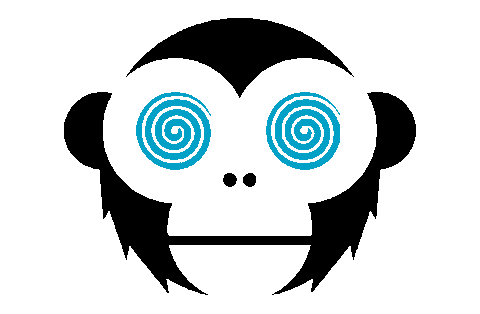

Our Partnerships
(Funimation)
Below are few of our company partners that are participating in this competition. First we have the worlds most renown, well known, and biggest anime tv show library in the world, Funimation. Funimation was created in 1994 in Fort Worth Texas, where they got their fame by doing the english voiceover dubs for popular animess such as DragonBallz, Naturo, One Piece and thousands more. Funimation is the owner of multiple big name animation studios such as Kadokawa, Aniplex, and CloverWorks. The winners of the tournamnet will have their sories adapted into tv shows by Funimation and their animation studios.
Signing With a Company

(Crunchyroll)
Next up we have the anime merchandise HQ Crunchyroll. Crunchyroll was founded on May 5, 2016 and like funimation they also have a large library of anime shows to watch, but it is nowhere near as large as Funimations. What brought crunchyroll into the spotlight is their merchandise, and ability to sell mangas , unlike Funimation, for the fans from their most loved shows. For the winners of the tournamnet Crunchyroll will be handling the publishing of your book(manga) and merchandise to sell to the adoring fans!
Additional Deals
(HiDive)
Lastly we have the newest member of the group HiDive. HiDive was created in 2017 and wasnt really getting that much attention, considering the monster competition already at the top bring in Funimation and Crunchyroll. But as of Janurary of 2022 Crunchyroll bought out HiDive and now owns them, and with Crunchyrolls help HiDive is on the rise as an upcoming streaming platform. HiDive tends to have anime that cannot be found on any other streaming platform, and due to this exotic library of theirs, it has gained much favor from the fans. For the winners of the tournamnet HiDive will also be participating in the adaptation of your stories into tv shows.